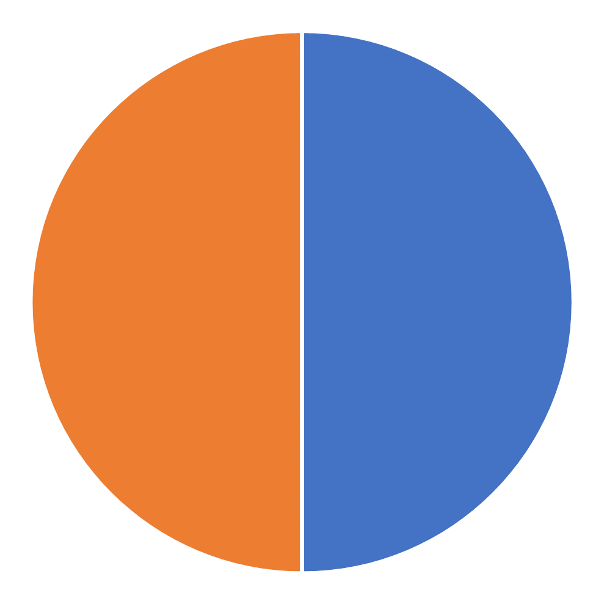
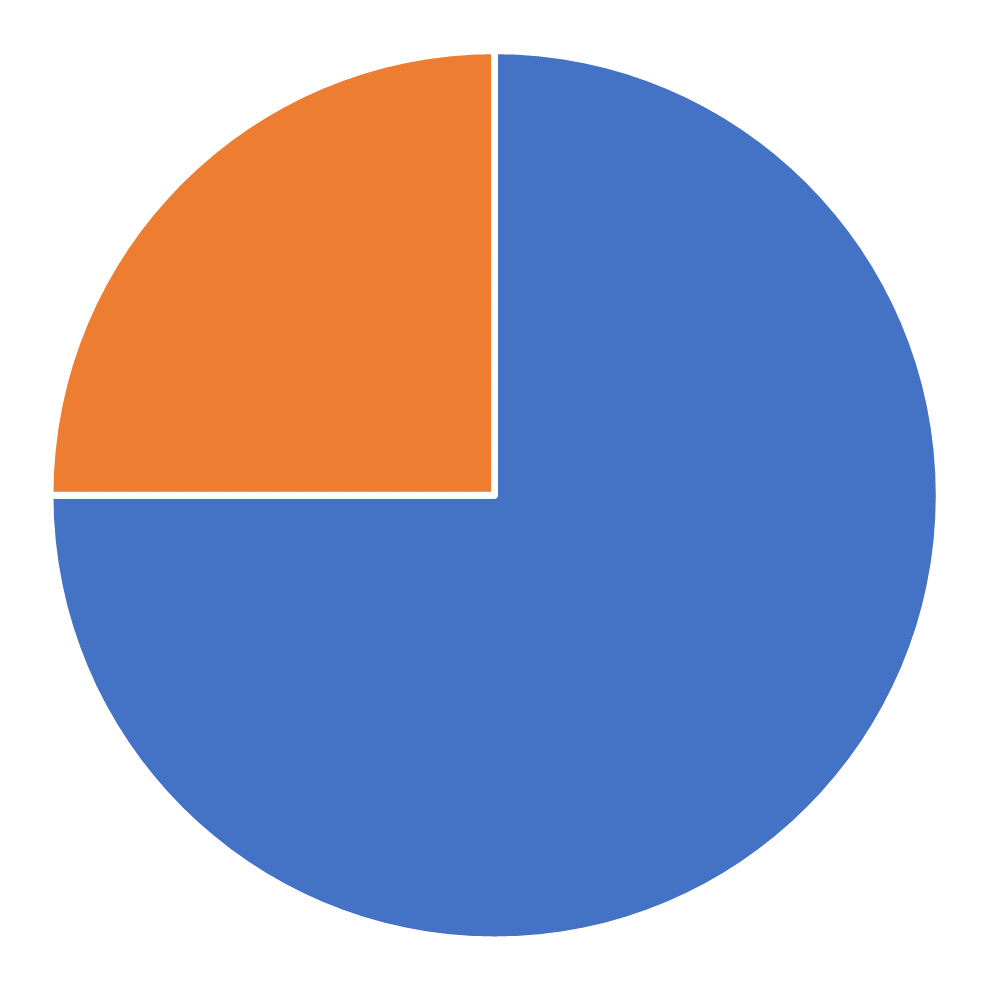
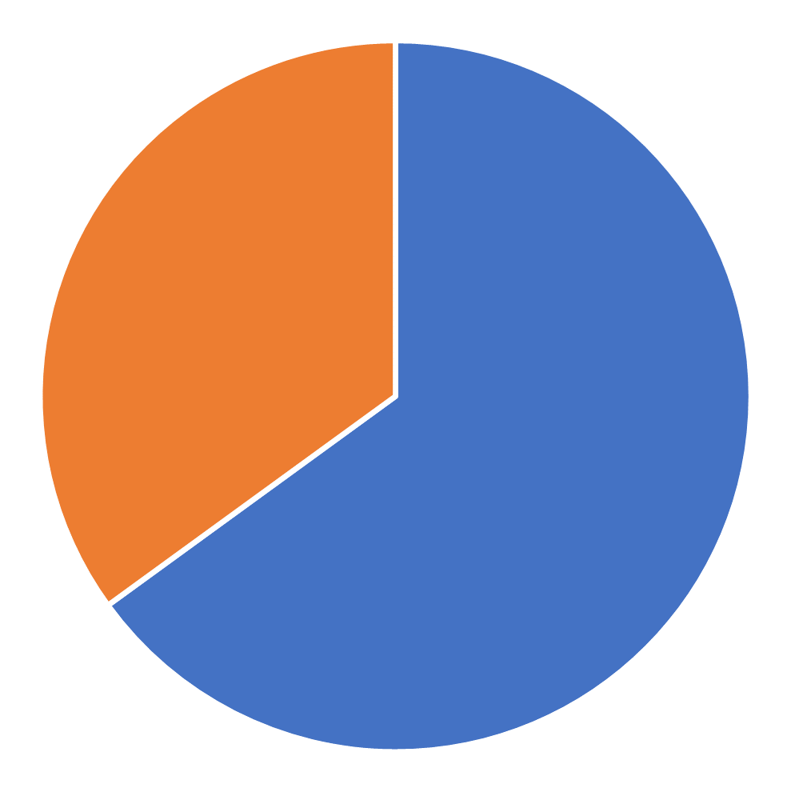
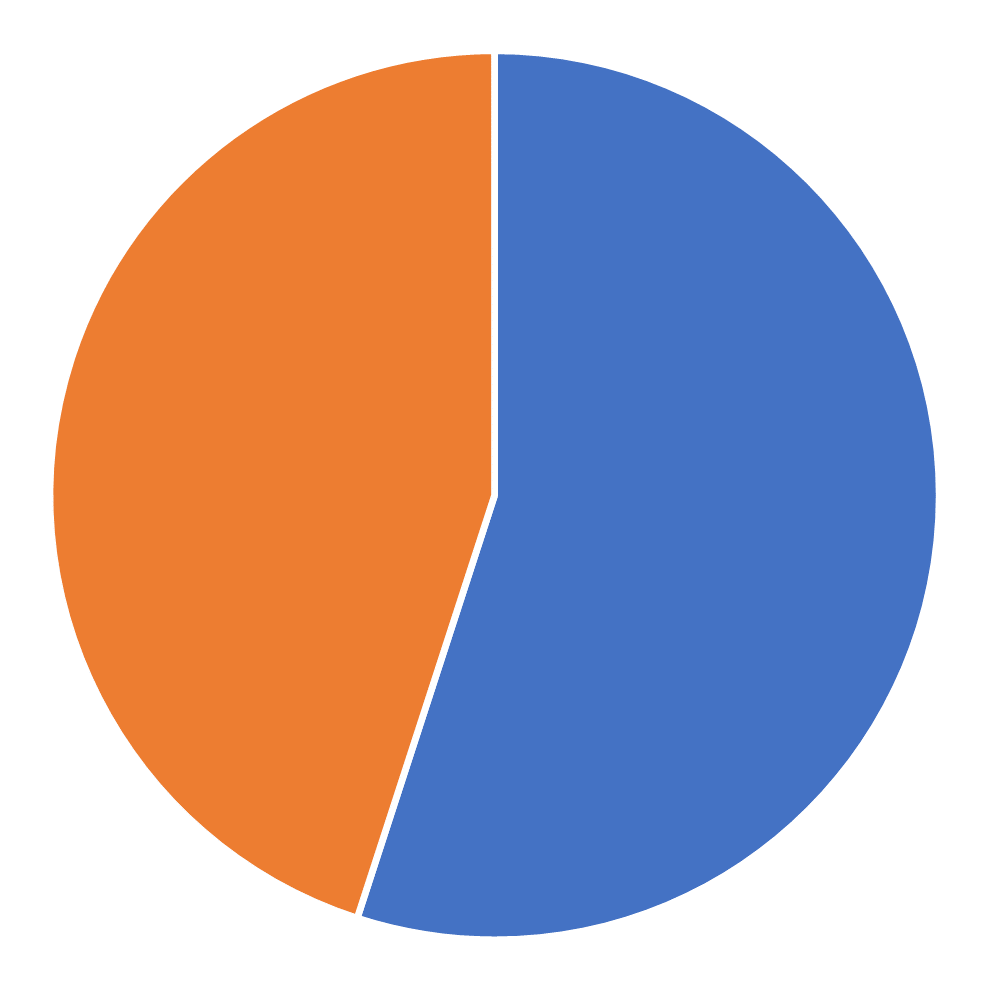
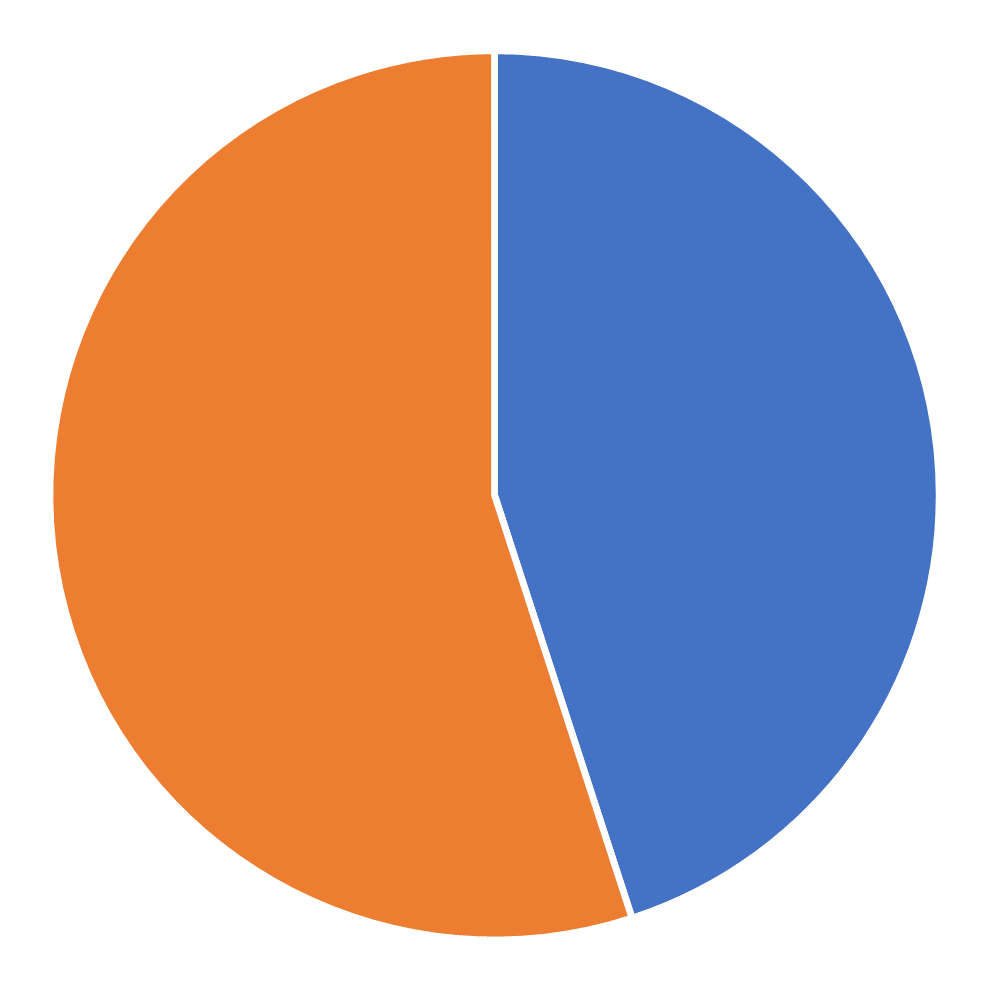
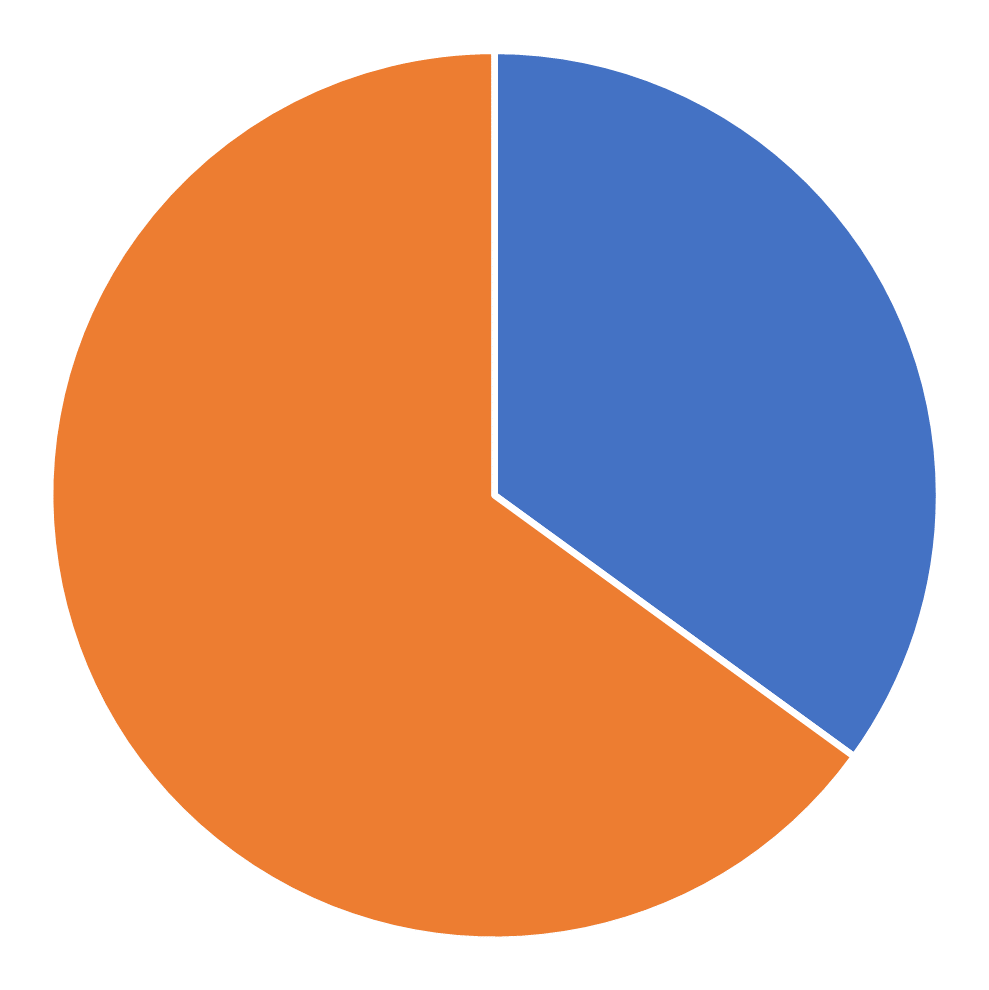
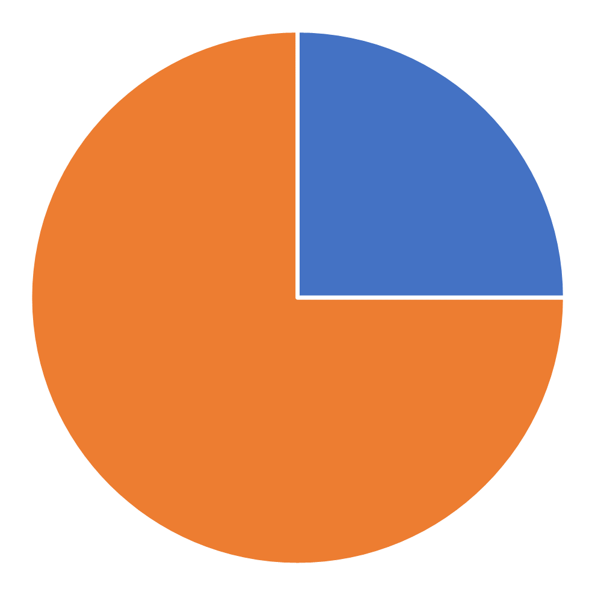

<!DOCTYPE html>
<html>
<head>
    <title>My experiment</title>
    <script src="https://unpkg.com/jspsych@7.3.0"></script>
    <script src="https://unpkg.com/@jspsych/plugin-html-keyboard-response@1.0.0"></script>
    <script src="https://unpkg.com/@jspsych/plugin-image-keyboard-response@1.0.0"></script>
    <script src="https://unpkg.com/@jspsych/plugin-preload@1.0.0"></script>
    <link href="https://unpkg.com/jspsych@7.0.0/css/jspsych.css" rel="stylesheet" type="text/css" />
</head>
<body>
</body>
<script>

    /* initialize jsPsych */
    var jsPsych = initJsPsych({
        on_finish: function () {
            jsPsych.data.displayData();
        }
    });

    /* create timeline */
    var timeline = [];

    /* randomize between participants (1 = good good, 2 = good bad, 3 = bad good, 4 = bad bad) */
    var cond = Math.floor(Math.random() * 4  + 1);
    alert(cond);
    jsPsych.data.addProperties({condition: cond});

    /* preload images */
    var preload = {
        type: jsPsychPreload,
        images: ['img/0.png', 'img/25.png', 'img/35.png', 'img/45.png', 'img/55.png', 'img/65.png', 'img/75.png', 'img/100.png', 'img/50.png', 'img/orange.png', 'img/blue.png']
    };
    timeline.push(preload);

    /* define welcome message trial */
    var welcome = {
        type: jsPsychHtmlKeyboardResponse,
        stimulus: "Welcome to the experiment. Press any key to begin."
    };
    timeline.push(welcome);

    /* define instructions trial */
    var instructions = {
        type: jsPsychHtmlKeyboardResponse,
        stimulus: `
        <p>In this exepriment, you will be given information about a signal that
        randomly flashes orange or blue throughout the day. The total amount of time
        that the signal spends in these state any given day is known, but the state of 
        the signal at any given moment is not. Your task is to guess
        whether the sensor is orange or blue at a given moment given daily totals, 
        plus information about that specific moment from a sensor of unknown reliability.</p>
        <p>For example, the pie chart below shows that the signal was on for 50% 
        of the day and off for 50% of the day. For the moment in question, the 
        sensor indicates that the signal was orange. </P>
        <p>To guess that the signal was <strong>orange</strong> at that momement, press the letter F.</p>
        <p>To guess that the signal was <strong>blue</strong> at that momement, press the letter J.</p>
        <div style='width: 700px;'>
        <div style='float: left;'></img>
        <p class='small'><strong>Daily total</strong></p></div>
        <div style='float: right;'></img>
        <p class='small'><strong>Sensor</strong></p></div>
        </div>
        <p>Press any key to begin.</p>
      `,
        post_trial_gap: 500
    };
    timeline.push(instructions);

    /* define trial stimuli array for timeline variables 
        Get ground truth first
        Use ground truth to calculate cue (80% accurate or 20% accurate)
    */
    var gt = "None";
    var getGt = function (prob) {
        if (jsPsych.randomization.randomInt(1, 100) <= prob) { gt = 'j'; } else { gt = 'f'; }
        console.log("getGt() = " + gt);
        return gt;
    }

    var getCue = function () {
        if (jsPsych.randomization.randomInt(1, 100) <= 80) {
            cue = gt;
        } else if (gt == 'j') {
            cue = 'f';
            sens = "img/orange.png";
        } else {
            cue = 'j';
            sens = "img/blue.png";
        }
        console.log("getCue() gt = " + gt);
        console.log("getCue() cue = " + cue);

        return "<div style='margin-left:50%'></img><p>Sensor says: " + cue + "</p></div><p>Press f for orange, j for blue</p><p>GT: " + gt + "</p>";
    }

    var getBadCue = function () {
        if (jsPsych.randomization.randomInt(1, 100) <= 20) {
            cue = gt;
        } else if (gt == 'j') {
            cue = 'f';
            sens = "img/orange.png";
        } else {
            cue = 'j';
            sens = "img/blue.png";
        }
        console.log("getBadCue() gt = " + gt);
        console.log("getBadCue() cue = " + cue);
        return "<div style='margin-left:50%'></img><p>Bad sensor says: " + cue + "</p></div><p>Press f for orange, j for blue</p><p>GT: " + gt + "</p>";
    }

    var getStimulus = function(imageName){
        return "<p>TEST</p>";
    }
    //Maybe I want to use non-image keyboard response for more control
    var test_stimuli_g = [
        { correct_response: getGt(25), prompt: getCue(), stimulus: "<div style='width:50%; float:left;'></img><p>Daily total</p></div>" },
        { correct_response: getGt(35), prompt: getCue(), stimulus: "<div style='width:50%; float:left;'></img><p>Daily total</p></div>" },
        { correct_response: getGt(45), prompt: getCue(), stimulus: "<div style='width:50%; float:left;'></img><p>Daily total</p></div>" },
        { correct_response: getGt(55), prompt: getCue(), stimulus: "<div style='width:50%; float:left;'></img><p>Daily total</p></div>" },
        { correct_response: getGt(65), prompt: getCue(), stimulus: "<div style='width:50%; float:left;'></img><p>Daily total</p></div>" },
        { correct_response: getGt(75), prompt: getCue(), stimulus: "<div style='width:50%; float:left;'></img><p>Daily total</p></div>" }
    ];

    var test_stimuli_b = [
        { stimulus: getStimulus("img/25.png"), correct_response: getGt(25), prompt: getBadCue() },
        { stimulus: getStimulus("img/35.png"), correct_response: getGt(35), prompt: getBadCue() },
        { stimulus: getStimulus("img/45.png"), correct_response: getGt(45), prompt: getBadCue() },
        { stimulus: getStimulus("img/55.png"), correct_response: getGt(55), prompt: getBadCue() },
        { stimulus: getStimulus("img/65.png"), correct_response: getGt(65), prompt: getBadCue() },
        { stimulus: getStimulus("img/75.png"), correct_response: getGt(75), prompt: getBadCue() }
    ];

    /* define test trials and results*/
    var results = {
        type: jsPsychHtmlKeyboardResponse,
        stimulus: function () {

            var lasttrialdata = jsPsych.data.getLastTrialData();
            console.log(lasttrialdata.select('correct').values[0]);
            if (lasttrialdata.select('correct').values[0]) { var cor = "Correct"; } else { var cor = "Incorrect"; }
            var pie = lasttrialdata.select('stimulus').values;
            var sensor = lasttrialdata.select('cue').values;
            var resp = lasttrialdata.select('response').values;
            console.log(lasttrialdata);

            var trials = jsPsych.data.get().filter({ task: 'response' });
            var correct_trials = trials.filter({ correct: true });
            var accuracy = Math.round(correct_trials.count() / trials.count() * 100);
            var rt = Math.round(correct_trials.select('rt').mean());

            return `<div ></img></div><p></>
                    <p>${sensor}</p>
                    <p>Your response: ${resp}</p>
                    <p>${cor}!</p>
                    <p>You responded correctly on ${correct_trials.count()}/${trials.count()} trials (${accuracy}%).</p>`;

        },
        choices: "ALL_KEYS",
        data: {
            task: 'results'
        }
    };

    var test = {
        type: jsPsychHtmlKeyboardResponse,
        stimulus: jsPsych.timelineVariable('stimulus'),
        stimulus_width: 300,
        choices: ['f', 'j'],
        prompt: jsPsych.timelineVariable('prompt'),
        data: {
            task: 'response',
            cue: jsPsych.timelineVariable('prompt'),
            correct_response: jsPsych.timelineVariable('correct_response')
        },
        on_finish: function (data) {
            data.correct = jsPsych.pluginAPI.compareKeys(data.response, data.correct_response);
        }
    };

    /* define test procedure

Can I get this to change the cue probability for the second half?
Make test proceedures for all 4 and randomly sample which to push to timeline? (Or rotate based on counter or participant ID??)
*/
    var test_procedure_g = {
        timeline: [test, results],
        timeline_variables: test_stimuli_g,
        repetitions: 1,
        randomize_order: true
    };
    
    var test_procedure_b = {
        timeline: [test, results],
        timeline_variables: test_stimuli_b,
        repetitions: 1,
        randomize_order: true
    };
    

    switch (cond) {
        case 1:
            timeline.push(test_procedure_g);
            timeline.push(test_procedure_g);
            break;
        case 2:
            timeline.push(test_procedure_g);
            timeline.push(test_procedure_b);
            break;
        case 3:
            timeline.push(test_procedure_b);
            timeline.push(test_procedure_g);
            break;
        case 4:
            timeline.push(test_procedure_b);
            timeline.push(test_procedure_b);
            break;
        default:
            alert("No procedure pushed to timeline.");
            break;

    }


    /* define debrief */
    var debrief_block = {
        type: jsPsychHtmlKeyboardResponse,
        stimulus: function () {

            var trials = jsPsych.data.get().filter({ task: 'response' });
            var correct_trials = trials.filter({ correct: true });
            var accuracy = Math.round(correct_trials.count() / trials.count() * 100);
            var rt = Math.round(correct_trials.select('rt').mean());

            return `<p>You responded correctly on ${accuracy}% of the trials.</p>
          <p>Your average response time was ${rt}ms.</p>
          <p>Press any key to complete the experiment. Thank you!</p>`;

        }
    };
    timeline.push(debrief_block);

    /* start the experiment */
    jsPsych.run(timeline);

</script>
</html>